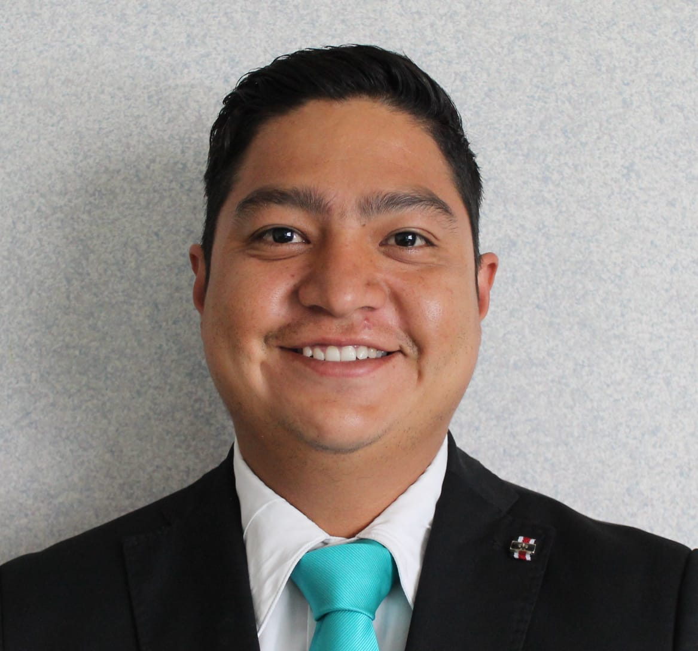

Jared Helaman Martinez Diaz | WDD130
Hello my name is Jared, I am From Mexico, and I like very much swimming, listen music. It is my first programing, I do not understan very much but I am very excited to learn and be a good programmer
Hello my name is Jared, I am From Mexico, and I like very much swimming, listen music. It is my first programing, I do not understan very much but I am very excited to learn and be a good programmer